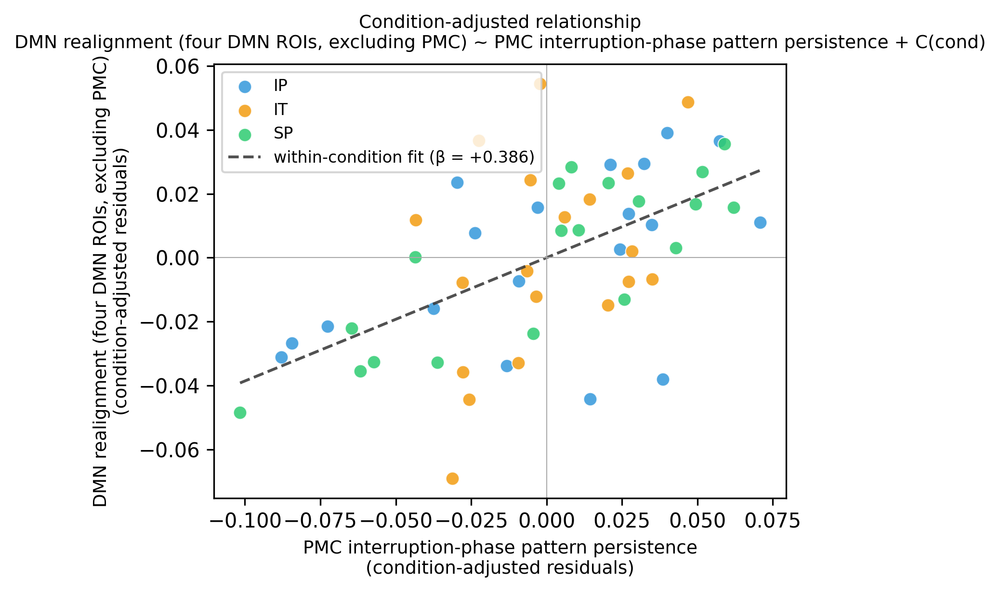
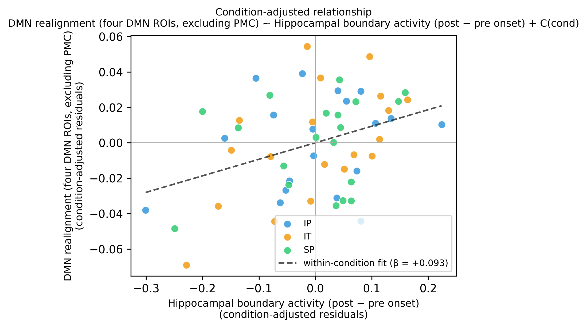
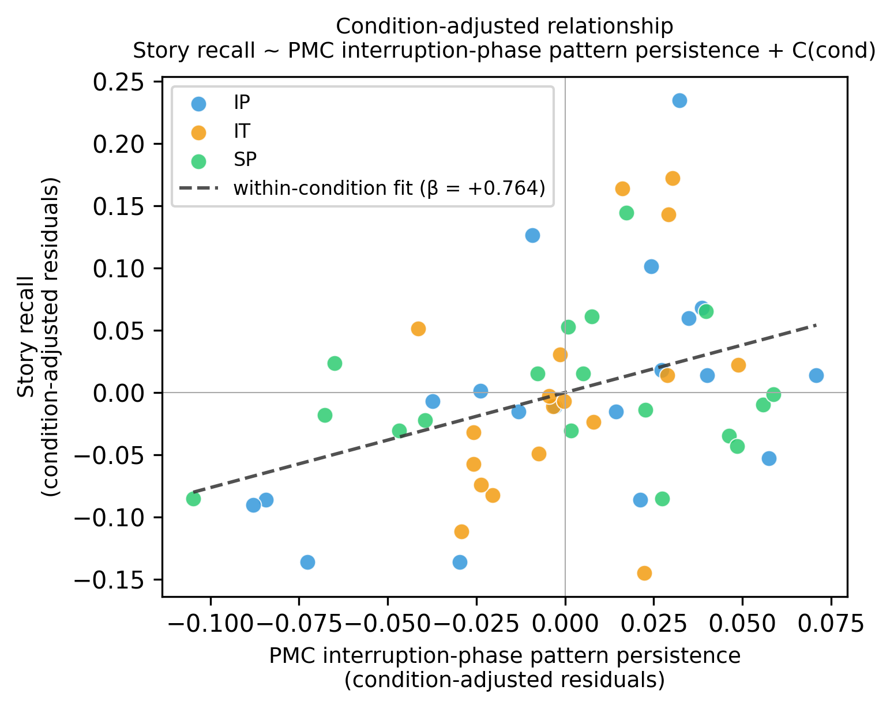
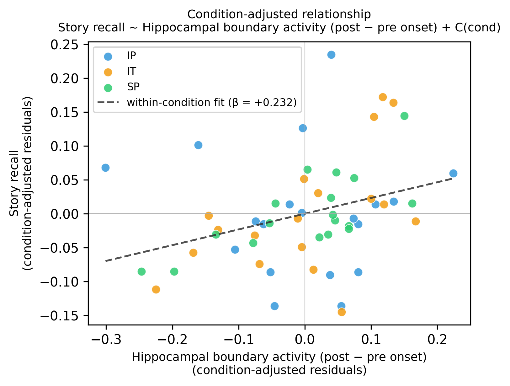

We tested whether two neural signatures measured during the interruption phase predict downstream behavior at the immediately following story segment: the persistence of the shared posterior medial cortex (PMC) multivoxel pattern across the interruption (interruption-phase inter-subject pattern correlation in a fifteen-second window beginning seven and a half seconds after interruption onset, with the first five TRs from onset discarded to avoid hemodynamic carry-over from the preceding story), and hippocampal boundary activity at the interruption-to-story transition (post-minus-pre mean signal over a five-TR window, with one TR skipped at the boundary to avoid hemodynamic carry-over). The downstream behavioral measures were default-mode-network (DMN) realignment at story resumption (a five-TR realignment score over the skip-three-use-five window immediately after the story resumes) and subsequent free-recall accuracy.
For each predictor and each outcome, an ordinary-least-squares model was fit to the pooled intact-pause (IP), intact-theory-of-mind (IT), and scrambled-pause (SP) participants, with condition entered as a categorical fixed effect and one observation per participant. Because IP, IT, and SP are between-subjects, the condition fixed effect absorbs between-condition mean shifts in both the predictor and the outcome, so the predictor coefficient β reflects the within-condition relationship that remains after the three condition means have been aligned. The reported β, standard error, t-statistic, and two-sided p in each table are this within-condition coefficient; n, R2, and adjusted R2 appear in the model header.
The scatter accompanying each single-predictor model visualizes the same within-condition relationship. Each axis is residualised against the condition fixed effect: the predictor on the x-axis is the raw predictor minus its condition mean, and the outcome on the y-axis is the raw outcome minus its condition mean. The slope of a line through these residuals equals the within-condition β reported in the matched table, and that slope is drawn as the dashed fit line in each panel. Each participant retains their condition color (CT, IP, IT, SP) so the per-condition spread is still visible. The joint two-predictor models (PMC + Hipp) are reported in table form only; their partial relationships are visualized by the corresponding single-predictor scatters.
DMN realignment ~ PMC interruption-phase persistence + condition
Predictors of interest (unshaded) | Condition fixed-effect contrasts and intercept (light gray)
| Term | β | SE | t | p |
|---|---|---|---|---|
| PMC interruption-phase pattern persistence | 0.3857 | 0.07725 | 4.993 | 6.80e-06 |
| Condition intact_tom (vs. baseline) | 0.01694 | 0.007653 | 2.213 | 0.0312 |
| Condition scram_pause (vs. baseline) | 0.01287 | 0.008068 | 1.595 | 0.1167 |
| Intercept (baseline) | 0.006824 | 0.009562 | 0.714 | 0.4786 |
| n | R2 | Adj R2 | F | dfmodel | dfresid | p (F) | AIC | BIC | log L |
|---|---|---|---|---|---|---|---|---|---|
| 57 | 0.3540 | 0.3174 | 9.679 | 3 | 53 | 3.39e-05 | -262.12 | -253.94 | 135.06 |

DMN realignment ~ hippocampal boundary activity + condition
Predictors of interest (unshaded) | Condition fixed-effect contrasts and intercept (light gray)
| Term | β | SE | t | p |
|---|---|---|---|---|
| Hippocampal boundary activity (post − pre onset) | 0.09328 | 0.032 | 2.915 | 0.0052 |
| Condition intact_tom (vs. baseline) | 0.02045 | 0.008932 | 2.290 | 0.0260 |
| Condition scram_pause (vs. baseline) | 0.007169 | 0.008961 | 0.800 | 0.4273 |
| Intercept (baseline) | 0.03669 | 0.006897 | 5.319 | 2.14e-06 |
| n | R2 | Adj R2 | F | dfmodel | dfresid | p (F) | AIC | BIC | log L |
|---|---|---|---|---|---|---|---|---|---|
| 57 | 0.1813 | 0.1350 | 3.912 | 3 | 53 | 0.0135 | -248.62 | -240.44 | 128.31 |

DMN realignment ~ PMC interruption-phase persistence + hippocampal boundary activity + condition
Predictors of interest (unshaded) | Condition fixed-effect contrasts and intercept (light gray)
| Term | β | SE | t | p |
|---|---|---|---|---|
| PMC interruption-phase pattern persistence | 0.3503 | 0.07505 | 4.668 | 2.17e-05 |
| Hippocampal boundary activity (post − pre onset) | 0.06893 | 0.02762 | 2.496 | 0.0158 |
| Condition intact_tom (vs. baseline) | 0.022 | 0.007577 | 2.903 | 0.0054 |
| Condition scram_pause (vs. baseline) | 0.01727 | 0.007897 | 2.187 | 0.0332 |
| Intercept (baseline) | 0.003354 | 0.009227 | 0.364 | 0.7177 |
| n | R2 | Adj R2 | F | dfmodel | dfresid | p (F) | AIC | BIC | log L |
|---|---|---|---|---|---|---|---|---|---|
| 57 | 0.4231 | 0.3787 | 9.533 | 4 | 52 | 7.38e-06 | -266.57 | -256.35 | 138.28 |
recall ~ PMC interruption-phase persistence + condition
Predictors of interest (unshaded) | Condition fixed-effect contrasts and intercept (light gray)
| Term | β | SE | t | p |
|---|---|---|---|---|
| PMC interruption-phase pattern persistence | 0.7636 | 0.2547 | 2.998 | 0.0042 |
| Condition intact_tom (vs. baseline) | -0.04083 | 0.02497 | -1.635 | 0.1082 |
| Condition scram_pause (vs. baseline) | -0.08564 | 0.02604 | -3.289 | 0.0018 |
| Intercept (baseline) | 0.1747 | 0.03127 | 5.589 | 8.97e-07 |
| n | R2 | Adj R2 | F | dfmodel | dfresid | p (F) | AIC | BIC | log L |
|---|---|---|---|---|---|---|---|---|---|
| 55 | 0.3589 | 0.3212 | 9.517 | 3 | 51 | 4.27e-05 | -124.47 | -116.44 | 66.23 |

recall ~ hippocampal boundary activity + condition
Predictors of interest (unshaded) | Condition fixed-effect contrasts and intercept (light gray)
| Term | β | SE | t | p |
|---|---|---|---|---|
| Hippocampal boundary activity (post − pre onset) | 0.232 | 0.09409 | 2.466 | 0.0171 |
| Condition intact_tom (vs. baseline) | -0.03077 | 0.02656 | -1.158 | 0.2522 |
| Condition scram_pause (vs. baseline) | -0.09 | 0.02662 | -3.380 | 0.0014 |
| Intercept (baseline) | 0.229 | 0.02019 | 11.340 | 1.49e-15 |
| n | R2 | Adj R2 | F | dfmodel | dfresid | p (F) | AIC | BIC | log L |
|---|---|---|---|---|---|---|---|---|---|
| 55 | 0.3262 | 0.2866 | 8.230 | 3 | 51 | 1.45e-04 | -121.73 | -113.70 | 64.87 |

recall ~ PMC interruption-phase persistence + hippocampal boundary activity + condition
Predictors of interest (unshaded) | Condition fixed-effect contrasts and intercept (light gray)
| Term | β | SE | t | p |
|---|---|---|---|---|
| PMC interruption-phase pattern persistence | 0.6626 | 0.2521 | 2.628 | 0.0114 |
| Hippocampal boundary activity (post − pre onset) | 0.185 | 0.09085 | 2.036 | 0.0470 |
| Condition intact_tom (vs. baseline) | -0.02681 | 0.02519 | -1.064 | 0.2924 |
| Condition scram_pause (vs. baseline) | -0.0732 | 0.026 | -2.815 | 0.0070 |
| Intercept (baseline) | 0.1661 | 0.03064 | 5.419 | 1.72e-06 |
| n | R2 | Adj R2 | F | dfmodel | dfresid | p (F) | AIC | BIC | log L |
|---|---|---|---|---|---|---|---|---|---|
| 55 | 0.4080 | 0.3606 | 8.614 | 4 | 50 | 2.28e-05 | -126.85 | -116.81 | 68.42 |